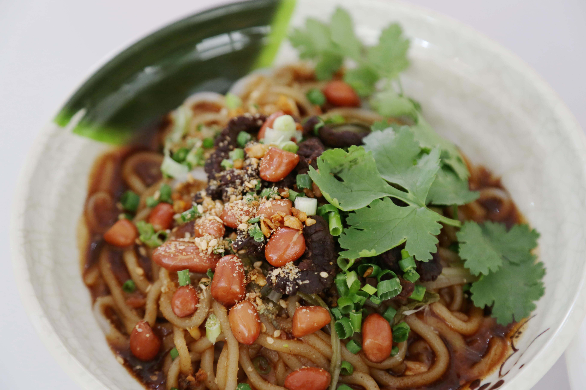
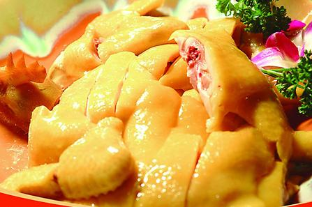

自我介绍
我是通信1903班的陈建有，我来自海南海口
家乡美食
海南粉
海南粉是海南省最具特色的小吃，属于海派菜。该小吃流传历史久远，在海南岛北部的海口市、定安县和澄迈县的市镇居民中食用比较普遍，而且是节日喜庆必备的象征吉祥长寿的珍品。
海南粉多味浓香，柔润爽滑，刺激食欲，故多吃而不腻，爱吃辣的加一点辣椒酱则更起味，吃到末尾剩下少量粉时，加进一小碗热腾腾的海蚌汤掺和着吃，更是满口喷香，回味无穷。

文昌鸡
文昌鸡是海南最负盛名的传统名菜。号称“四大名菜”之首。是每一位到海南旅游的人必尝的美味。文昌鸡列为海南“四大名菜”之一，而且是驰名中外的一道名菜。其肉质滑嫩，皮薄骨酥，香味甚浓，肥而不腻 。
